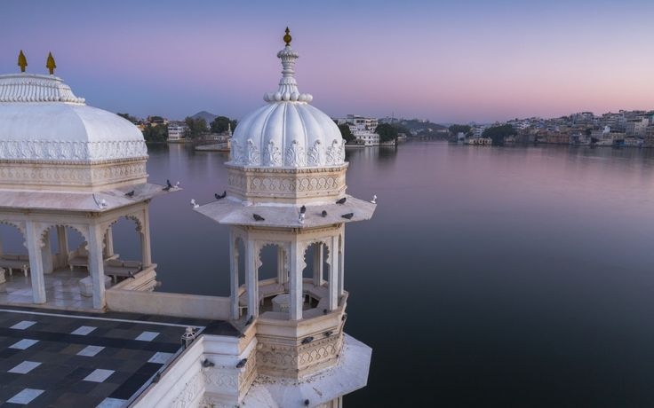
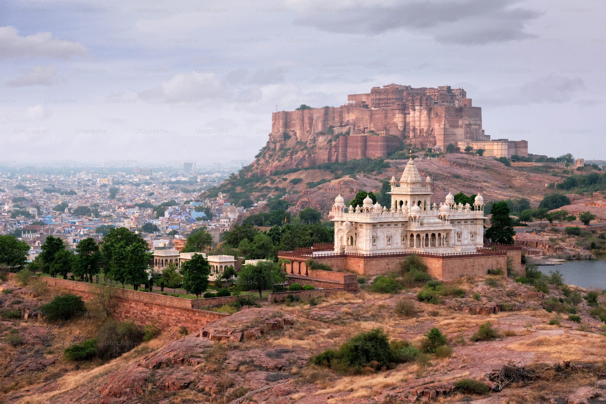
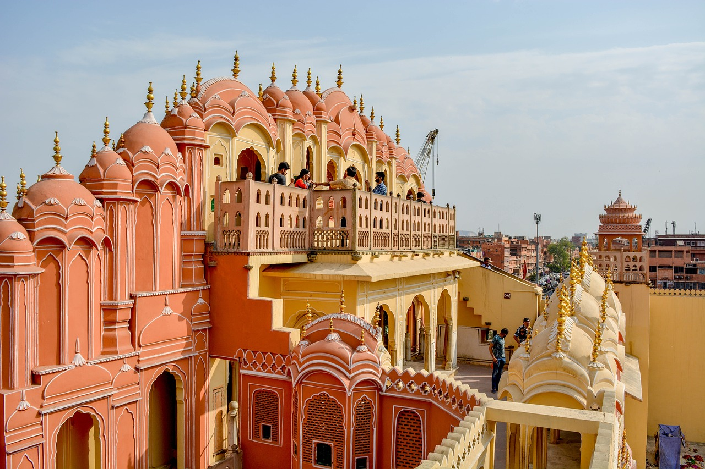
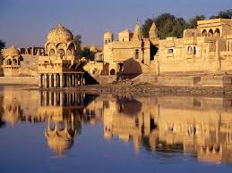
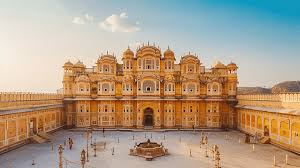
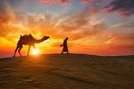
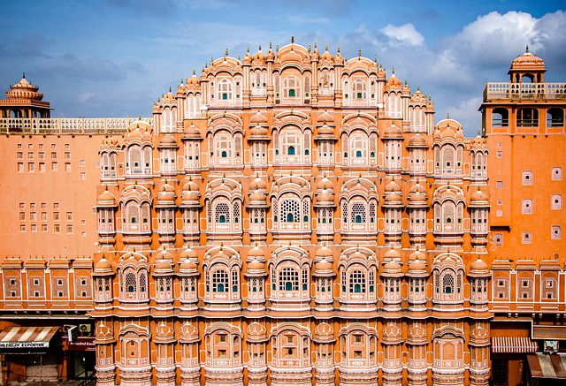

Highlights
- Jaipur - The Pink City: Visit the Amber Fort, Hawa Mahal, and City Palace. Jaipur is known for its pink-hued buildings, royal palaces, and rich history.
- Jaisalmer - The Golden City: Explore the Jaisalmer Fort, a UNESCO World Heritage site, and experience camel safaris in the vast Thar Desert at sunset.
- Udaipur - The City of Lakes: Visit Lake Pichola and the City Palace, enjoy a boat ride at sunset, and explore Jag Mandir and Saheliyon ki Bari for serene views.
- Jodhpur - The Blue City: Discover Mehrangarh Fort, one of India’s largest forts, and enjoy views over the city’s iconic blue-painted houses. Jaswant Thada and Umaid Bhawan Palace add to the charm.
- Pushkar - The Holy Town: Famous for the Pushkar Lake and Brahma Temple, as well as the Pushkar Camel Fair, which is an incredible cultural experience.
- Ranthambore National Park: Known for its Bengal tiger population, Ranthambore offers thrilling safari experiences and historical sites like the Ranthambore Fort.
- Chittorgarh Fort: A UNESCO World Heritage site, this fort is one of the largest in India, known for its tales of Rajput bravery and sacrifice, with attractions like Vijay Stambh (Victory Tower) and Rani Padmini’s Palace.
    



Rajasthan- Architectural Delight
Day 1: Arrival in Jaipur
- Activities: Check-in, then explore Jaipur’s iconic attractions
- Highlights: Amber Fort, City Palace, Hawa Mahal
- Evening: Explore the vibrant bazaars for shopping (Johari Bazaar and Bapu Bazaar).
- Overnight: Stay in Jaipur
Day 2: Jaipur Sightseeing
- Highlights: Nahargarh Fort, Jantar mantar, Albert Hall Museum, Birla Mandir
- Evening: Experience a traditional Rajasthani dinner with folk music at a local restaurant or cultural village like Chokhi Dhani.
- Overnight: Stay in Jaipur
Day 3: Jaipur to Pushkar (3 hours)
- Highlights: Pushkar Lake, Brahma Temple, Pushkar Bazar
- Activities: Drive to Pushkar and explore the holy town
- Overnight: Stay in Pushkar
Day 4: Departure from Pushkar via Ajmer
- Optional Stop: Visit the Ajmer Sharif Dargah (a famous Sufi shrine) in Ajmer on the way.
- Drive back to Jaipur or continue your onward journey from Ajmer.